Father Height
[1,] 199.39 185.928
[2,] 175.26 180.848
[3,] 175.26 190.500
[4,] 175.26 177.800
[5,] 175.26 185.420
[6,] 176.53 179.070 Father Height
175.4905 178.9070 Introduction to Statistical Learning - PISE
This unit will cover the following topics:
PCA produces a low-dimensional representation of a dataset
It finds a sequence of linear combinations of the variables that have maximal variance and are mutually uncorrelated
Apart from producing derived variables for use in supervised learning problems, PCA also serves as a tool for data visualization
Father Height
[1,] 199.39 185.928
[2,] 175.26 180.848
[3,] 175.26 190.500
[4,] 175.26 177.800
[5,] 175.26 185.420
[6,] 176.53 179.070 Father Height
175.4905 178.9070 The data matrix contains paired observations of father and son heights (in centimeters), where each row corresponds to a single family (using only the first son per father), and the two columns correspond to: Father the father’s height, and Height, the son’s height.
Thus, \mathbf{X} is an n \times 2, where n=173 is the number of distinct fathers in the dataset.
The goal of the analysis is to summarize the relationship between fathers’ and sons’ heights using a single underlying dimension (tallness) that captures their shared variation.

The first principal component of a set of features X_1, X_2, ..., X_p is the normalized linear combination of the features
Z_1 = \phi_{11}X_1 + \phi_{21}X_2 + \cdots + \phi_{p1}X_p
that has the largest variance. By normalized, we mean that:
\sum_{j=1}^{p} \phi_{j1}^2 = 1
We refer to the elements \phi_{11}, ..., \phi_{p1} as the loadings of the first principal component. Together, the loadings make up the principal component loading vector: \phi_1 = (\phi_{11} \ \phi_{21} \ \cdots \ \phi_{p1})^T
We constrain the loadings so that their sum of squares is equal to one. Otherwise, arbitrarily large values would lead to arbitrarily large variance

The father and son heights, measured in centimeters, are shown as purple circles. The green solid line indicates the first principal component direction, and the blue dashed line indicates the second principal component direction.

The Galton data are shown, where fathers’ heights and sons’ heights are plotted as purple points. The mean father height and mean son height are indicated by a blue circle.
Left: The first principal component direction is shown in green. It is the direction along which the data exhibit the greatest variability. The perpendicular distances from each observation to this line are illustrated by black dashed segments. The blue dot represents (\overline{\mathrm{Father}}, \overline{\mathrm{Height}}).
Right: The data from the left panel have been rotated so that the first principal component direction aligns with the x-axis.
Mathematically, the first principal component can be written as a linear combination of the centered variables:
Z_1 = 0.700\,(\mathrm{Father} - \overline{\mathrm{Father}}) + 0.714\,(\mathrm{Height} - \overline{\mathrm{Height}})
Here, the coefficients \phi_{11}=0.7 and \phi_{21}=0.714 (called loadings) define the principal component direction. They satisfy 0.7^2 + 0.714^2 =1.
Since both loadings are positive and of similar magnitude, Z_1 is essentially an average of father’s and son’s heights, capturing a common overall height dimension. For each family i, z_{i1} = 0.700\,(\mathrm{Father}_i - \overline{\mathrm{Father}}) + 0.714\,(\mathrm{Height}_i - \overline{\mathrm{Height}})
The values of z_{11},z_{21},\ldots,z_{n1} are known as the first principal component scores.

Plots of the first principal component scores z_{i1} versus father height and son height. The relationships are strong.

Plots of the second principal component scores z_{i2} versus father height and son height. The relationships are weak.
Suppose we have an n \times p data set \mathbf{X}. Since we are only interested in variance, we assume that each of the variables in \mathbf{X} has been centered to have mean zero (that is, the column means of \mathbf{X} are zero)
We then look for the linear combination of the sample feature values of the form
z_{i1} = \phi_{11}x_{i1} + \phi_{21}x_{i2} + \cdots + \phi_{p1}x_{ip}
for i = 1, ..., n that has largest sample variance, subject to the constraint that \sum_{j=1}^{p} \phi_{j1}^2 = 1
Since each of the x_{ij} has mean zero, then so does z_{i1} (for any values of \phi_{j1}). Hence the sample variance of the z_{i1} can be written as
\frac{1}{n} \sum_{i=1}^{n} z_{i1}^2
The first principal component loading vector solves the optimization problem:
\max_{\phi_{11}, ..., \phi_{p1}}\sum_{i=1}^{n} \left( \sum_{j=1}^{p} \phi_{j1} x_{ij} \right)^2\quad \mathrm{subject\,\,to\,\,}\sum_{j=1}^{p} \phi_{j1}^2 = 1.
This problem can be solved via singular value decomposition (SVD) of the matrix \mathbf{X}, a standard technique in linear algebra.
We refer to Z_1 as the first principal component, with realized values z_{11}, \ldots, z_{n1}
The loading vector \phi_1 with elements \phi_{11},\phi_{21}, \ldots, \phi_{p1} defines a direction in feature space along which the data vary the most.
If we project the n data points x_1,\ldots,x_n onto this direction, the projected values are the principal component scores z_{11},z_{21},\ldots,z_{n1} themselves.
The second principal component is the linear combination of X_1,...,X_p that has maximal variance among all linear combinations that are uncorrelated with Z_1.
The second principal component scores z_{12},z_{22},\ldots,z_{n2} take the form z_{i2} = \phi_{12}x_{i1} + \phi_{22}x_{i2} + \cdots + \phi_{p2}x_{ip} where \phi_2 is the second principal component loading vector, with elements, with elements \phi_{12},\phi_{22}, \ldots, \phi_{p2}.
The principal component directions \phi_1, \phi_2, \phi_3, \ldots are the ordered sequence of right singular vectors of the matrix \textbf X, and the variances of the components are 1/n times the squares of the singular values. There are at most \min(n−1,p) principal components.
Let \mathbf{Z} = ( \mathbf{z}_1 \,\, \mathbf{z}_2 \,\, \ldots \,\, \mathbf{z}_p ) denote the matrix of principal component scores, and let \mathbf{\Phi} = ( \phi_1 \,\, \phi_2 \,\, \ldots \,\, \phi_p ) denote the matrix of loading vectors
The first principal component loading vector has a very special property: it defines the line in p-dimensional space that is closest to the n observations (using average squared Euclidean distance as a measure of closeness)
The notion of principal components as the dimensions that are closest to the n observations extends beyond just the first principal component.
For instance, the first two principal components of a data set span the plane that is closest to the n observations, in terms of average squared Euclidean distance.


Ninety observations simulated in three dimensions. The observations are displayed in color for ease of visualization.
Left: the first two principal component directions span the plane that best fits the data. The plane is positioned to minimize the sum of squared distances to each point.
Right: the first two principal component score vectors give the coordinates of the projection of the 90 observations onto the plane.
To understand the strength of each principal component, we consider the proportion of variance explained (PVE) by each component.
The total variance in the data (assuming the variables are centered) is \sum_{j=1}^{p} \mathrm{Var}(X_j) = \sum_{j=1}^{p} \frac{1}{n} \sum_{i=1}^{n} x_{ij}^2.
The variance explained by the m-th principal component is \mathrm{Var}(Z_m) = \frac{1}{n} \sum_{i=1}^{n} z_{im}^2.
It can be shown that the total variance is preserved under PCA: \sum_{j=1}^{p} \mathrm{Var}(X_j) = \sum_{m=1}^{M} \mathrm{Var}(Z_m), \quad \text{where } M = \min(n-1, p).
The proportion of variance explained (PVE) by the m-th principal component is given by the ratio \mathrm{PVE}_m = \frac{\sum_{i=1}^{n} z_{im}^2} {\sum_{j=1}^{p} \sum_{i=1}^{n} x_{ij}^2}, which is a value between 0 and 1.
The PVEs sum to one. We sometimes display the cumulative PVEs
The Singular Value Decomposition expresses any matrix, such as an n \times p matrix \mathbf{X}, as the product of three other matrices:
\mathbf{X = U D V^\mathsf{T}}
where:
\mathbf{U} is a n \times p column orthonormal matrix containing the left singular vectors.
\mathbf{D} is a p \times p diagonal matrix containing the singular values of \mathbf{X}.
\mathbf{V} is a p \times p column orthonormal matrix containing the right singular vectors.
In terms of the shapes of the matrices, the SVD decomposition has this form:
\begin{bmatrix} & & \\ & & \\ & \mathbf{X} & \\ & & \\ & & \\ \end{bmatrix} = \ \begin{bmatrix} & & \\ & & \\ & \mathbf{U} & \\ & & \\ & & \\ \end{bmatrix} \ \begin{bmatrix} & & \\ & \mathbf{D} & \\ & & \\ \end{bmatrix} \ \begin{bmatrix} & & \\ & \mathbf{V}^\mathsf{T} & \\ & & \\ \end{bmatrix}

If we assume that each of the variables in \mathbf{X} has been centered to have mean zero (that is, the column means of \mathbf{X} are zero), then \mathbf{X} = \mathbf{Z} \mathbf{\Phi}^\mathsf{T} where \mathbf{Z} = \mathbf{UD} and \mathbf{\Phi}=\mathbf{V}.
The Eckart–Young theorem (1936) addresses the problem of approximating a matrix by one of lower rank.
Let \mathbf{X} be an n \times p rectangular matrix (centered). The best M-dimensional approximation \hat{\mathbf{X}} to \mathbf{X} in the least-squares sense, is obtained by solving: \min_{\mathrm{rank} (\hat{\mathbf{X}})=M }\Big\{ \sum_{i=1}^{n}\sum_{j=1}^{p}(x_{ij} - \hat x_{ij} )^2 \Big\}
The solution is \hat{x}_{ij} = \sum_{m=1}^{M} z_{im} \phi_{jm} or, in matrix form, \hat{\mathbf{X}} = \mathbf{U}_M \mathbf{D}_M \mathbf{V}^\mathsf{T}_M = \mathbf{Z}_M \mathbf{\Phi}_M^\mathsf{T}

If you think about it, the SVD is of great utility because it tells us that the best 1-rank approximation, in the least squares sense, of any matrix \mathbf{X} is \hat{x}_{ij} = z_{i1} \phi_{j1}
This implies that, from a conceptual standpoint, we can approximate the n \times p numbers in \mathbf{X} with just n + p values: n numbers in \mathbf{z}_1 and p numbers in \phi_1.

Obtain the best rank-M approximation of the column centered matrix \mathbf{X}^c \hat{\mathbf{X}}_M = \mathbf{Z}_M \mathbf{\Phi}_M then construct the compressed image \hat{\mathbf{X}}_M + \mathbf{1}_n \bar{x} ensuring that all elements lie in the interval [0,1], where \mathbf{1}_n is an n\times 1 vector of ones, and \bar{x} is the 1\times p vector of the column means of the original (not column centered) matrix \mathbf{X}.
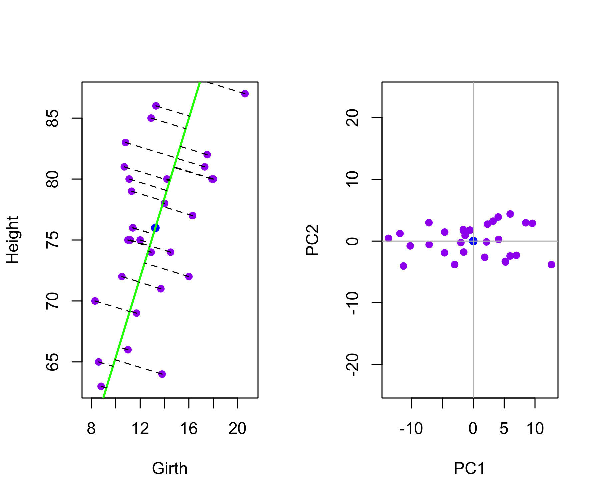
It is often the case that data matrices \mathbf{X} have missing entries, often represented by NAs (not available).
This is a nuisance, since many of our modeling procedures, such as linear regression and GLMs require complete data.
Sometimes imputation is the prediction problem! — as in recommender systems.
One simple approach is mean imputation — replace missing values for a variable by the mean of the non-missing entries.
This ignores the correlations among variables; we should be able to exploit these correlations when imputing missing values.
We assume values are missing at random; i.e. the missingness should not be informative.
We present an approach based on principal components.

Netflix users rate movies they have seen, usually a very from 1 (worst) to 5 (best). The symbol • represents a missing value: a movie that was not rated by the corresponding customer small fraction of available movies.
Predicting missing ratings provides a way to recommend movies to users. Matrix completion is one of the primary tools.
\min_{\mathbf{A} \in \mathbb{R}^{n\times M},\, \mathbf{B} \in \mathbb{R}^{p \times M} }\Big\{ \sum_{i=1}^{n}\sum_{j=1}^{p}(x_{ij} - \sum_{m=1}^{M} a_{im}b_{jm} )^2 \Big\} \mathbf{A} is a n\times M matrix whose (i,m) element is a_{im}, and \mathbf{B} is a p \times M element whose (j,m) element is b_{jm}.
It can be shown that for any value of M, the first M principal components provide a solution: \hat{a}_{jm} = z_{im},\quad \hat{b}_{jm} = \phi_{jm}.
But what to do if the matrix has missing elements?
\min_{\mathbf{A} \in \mathbb{R}^{n\times M},\, \mathbf{B} \in \mathbb{R}^{p \times M} }\Big\{ \sum_{(i,j) \in \mathcal{O}} (x_{ij} - \sum_{m=1}^{M} a_{im}b_{jm} )^2 \Big\} where \mathcal{O} is the set of all observed pairs of indices (i,j), a subset of the possible n \times p pairs.
Once we solve this problem:
we can estimate a missing observation x_{ij} using: \hat{x}_{ij} = \sum_{m=1}^{M} \hat{a}_{im} \hat{b}_{jm}, where \hat{a}_{im} and \hat{b}_{jm} are the (i,m) and (j,m) elements of the solution matrices \hat{\mathbf{A}} and \hat{\mathbf{B}}.
we can (approximately) recover the M principal component scores and loadings, as if data were complete.
Initialize: create a complete data matrix \tilde{\mathbf{X}} by filling in the missing values using mean imputation.
repeat: steps (a)–(c) until the objective in (c) fails to decrease:
(a). \min_{\mathbf{A} \in \mathbb{R}^{n\times M},\, \mathbf{B} \in \mathbb{R}^{p \times M} }\Big\{ \sum_{i=1}^{n}\sum_{j=1}^{p}( \tilde{x}_{ij} - \sum_{m=1}^{M} a_{im}b_{jm} )^2 \Big\} by computing the principal components of \tilde{\mathbf{X}}
(b). For each missing entry (i,j) \notin \mathcal{O}, set \tilde{x}_{ij} \leftarrow \sum_{m=1}^{M} \hat{a}_{im} \hat{b}_{jm} (c). Compute the objective \sum_{(i,j) \in \mathcal{O}}( x_{ij} - \sum_{m=1}^{M} \hat{a}_{im}\hat{b}_{jm} )^2
Return the estimated missing entries \tilde{x}_{ij}, \quad (i,j) \notin \mathcal{O}
Source: MovieLens, provided by GroupLens Research Group, University of Minnesota
Citation Harper, F. M., & Konstan, J. A. (2015). The MovieLens Datasets: History and Context. ACM Transactions on Interactive Intelligent Systems (TiiS), 5(4).
Full dataset (2024): ~32M ratings, 87K movies, 200K users.
Reduced dataset (2009): ~10M ratings, 10K movies, 72K users.
Train / Test split: ~9M / ~1M (The test set includes only users and movies that are also present in the training set)
Key: <movieId>
movieId userId rating timestamp title
<int> <int> <num> <int> <char>
1: 1 5 1 857911264 Toy Story (1995)
2: 1 14 3 1133572007 Toy Story (1995)
3: 1 18 3 1111545931 Toy Story (1995)
4: 1 23 5 849543482 Toy Story (1995)
5: 1 24 5 868254237 Toy Story (1995)
6: 1 30 5 876526432 Toy Story (1995)
genres date
<char> <POSc>
1: Adventure|Animation|Children|Comedy|Fantasy 1997-03-09 13:41:04
2: Adventure|Animation|Children|Comedy|Fantasy 2005-12-03 02:06:47
3: Adventure|Animation|Children|Comedy|Fantasy 2005-03-23 03:45:31
4: Adventure|Animation|Children|Comedy|Fantasy 1996-12-02 17:18:02
5: Adventure|Animation|Children|Comedy|Fantasy 1997-07-07 07:43:57
6: Adventure|Animation|Children|Comedy|Fantasy 1997-10-11 01:33:52[1] 9000058 7[1] 999996 7
0.5 1 1.5 2 2.5 3 3.5 4 4.5 5
85446 345991 106455 711099 333180 2120675 791792 2588053 526609 1390758 [1] 3.512487 Min. 1st Qu. Median Mean 3rd Qu. Max.
1.0 31.0 122.0 842.9 563.0 31358.0 Min. 1st Qu. Median Mean 3rd Qu. Max.
12.0 32.0 62.0 128.8 141.0 6626.0 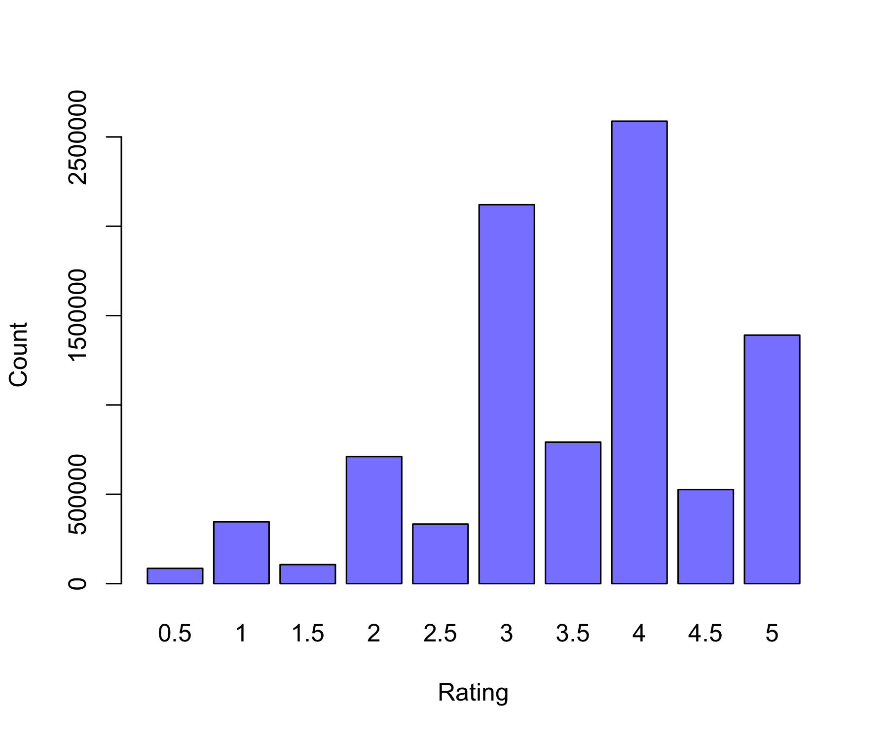
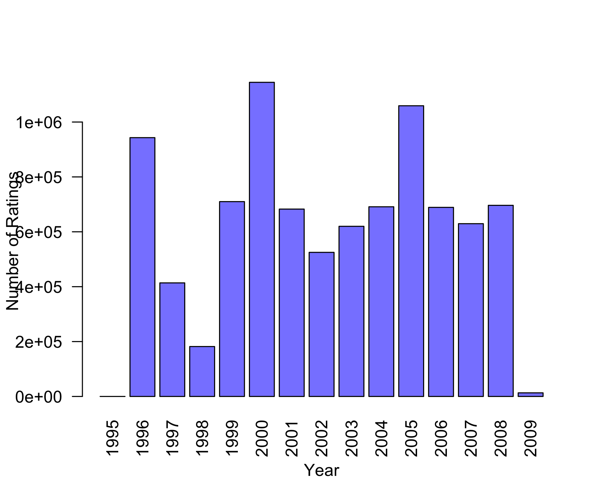
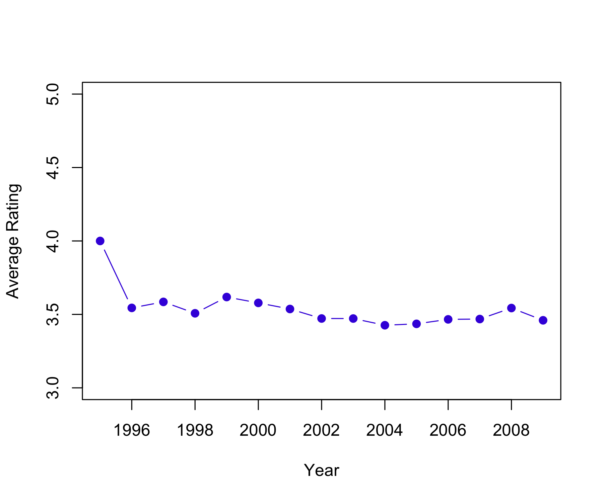
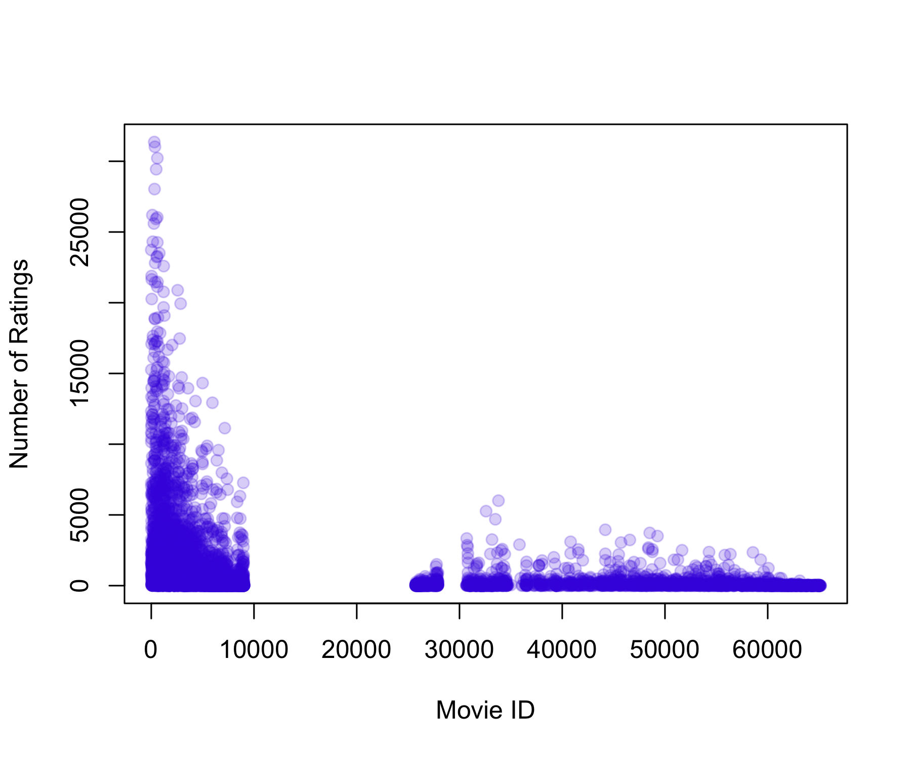
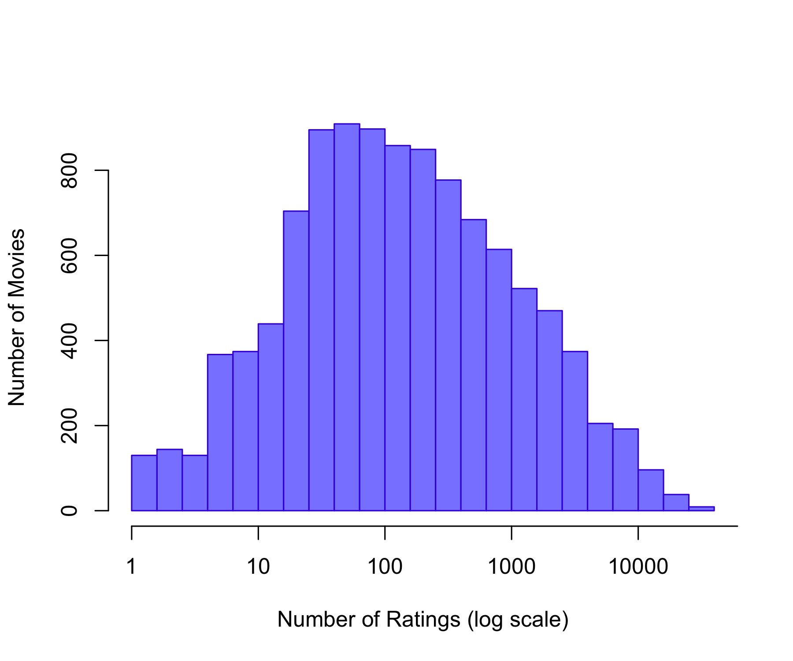
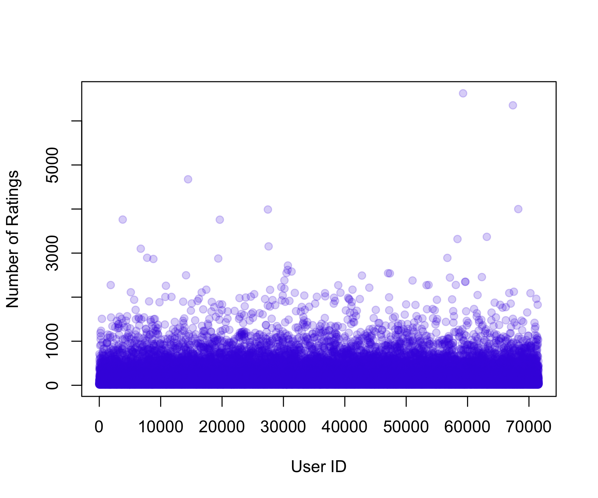
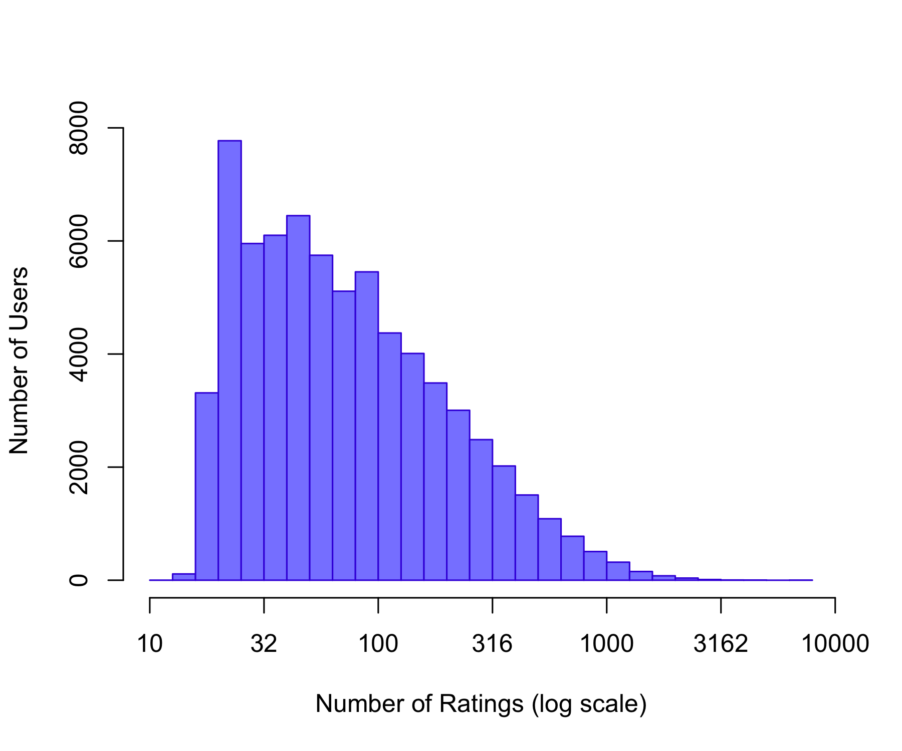
Genres Count
Action Action 2560840
Adventure Adventure 1908742
Animation Animation 466973
Children Children 738081
Comedy Comedy 3541159
Crime Crime 1327771
Documentary Documentary 93051
Drama Drama 3910447
Fantasy Fantasy 925708
Film-Noir Film-Noir 118375
Horror Horror 691252
Musical Musical 432683
Mystery Mystery 567649
Romance Romance 1712206
Sci-Fi Sci-Fi 1341182
Thriller Thriller 2325571
War War 511247
Western Western 189350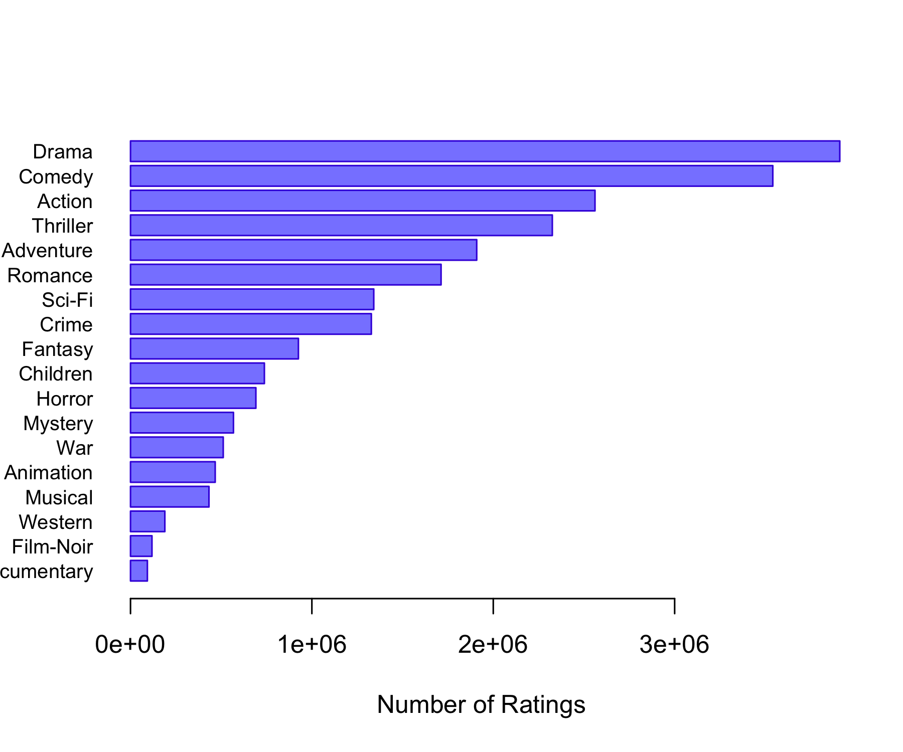
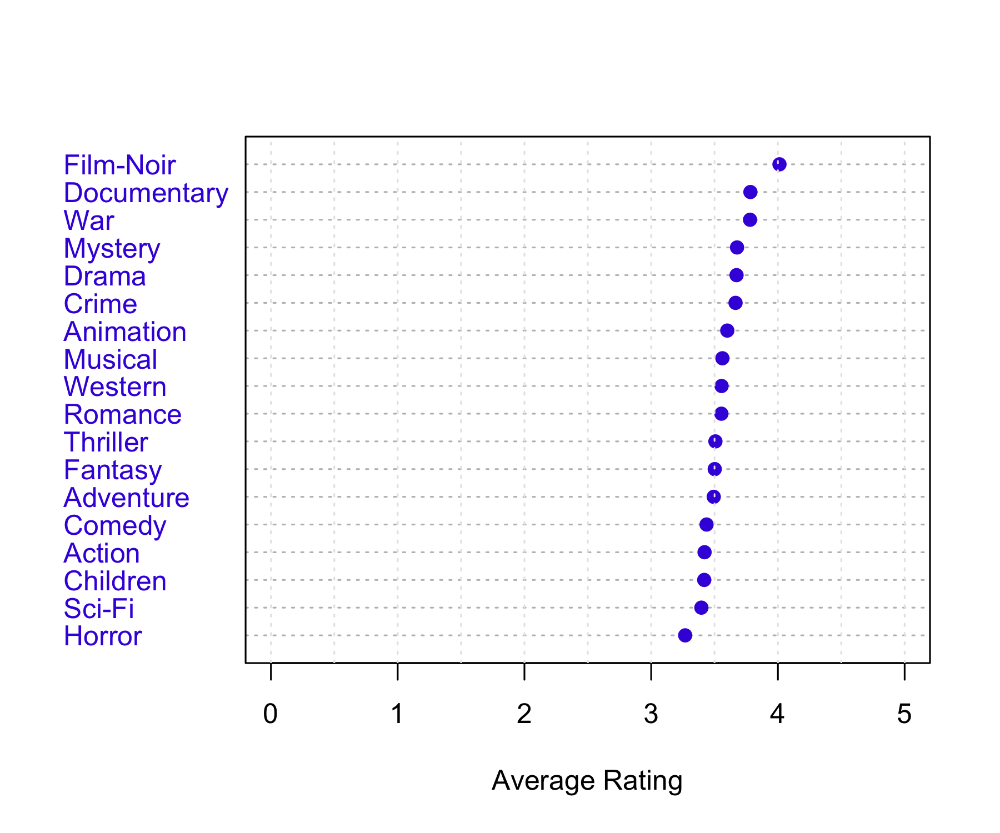
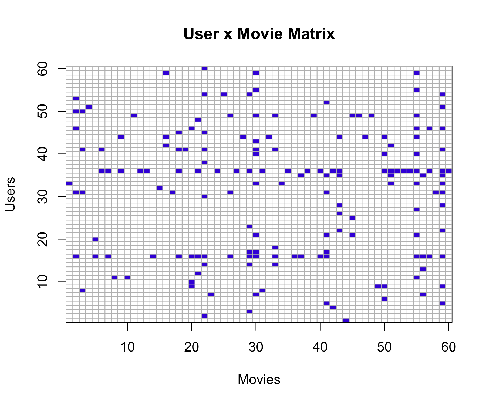
Predicts each rating as the overall average rating plus a user-specific bias: \hat{r}_{ui} = \mu + b_u
where b_u is the average deviation of user u from the global mean, estimated as: b_u = \frac{1}{N_u} \sum_i (r_{ui} - \mu)
with N_u the number of ratings made by user u, and \sum_i the sum over all movies rated by user u.
Substituting b_u into the prediction shows that: \hat{r}_{ui} = \mu + (\bar{r}_u - \mu) = \bar{r}_u
where \bar{r}_u is the average rating given by user u.
Therefore, this model predicts the same value for all movies for a given user, equal to the user’s average rating.
# -------------------------
# User bias model via lm()
# -------------------------
# Fit linear model with user fixed effects
fit_user <- lm(rating ~ factor(userId), data = training_set)
# Predict on test set
pred_user_lm <- predict(fit_user, newdata = test_set)
# Handle unseen users (NA predictions)
pred_user_lm[is.na(pred_user_lm)] <- mu
# RMSE
rmse_user_lm <- RMSE(test_set$rating, pred_user_lm)
rmse_user_lm[1] 0.9769863Predicts each rating as the overall average rating plus a movie-specific bias: \hat{r}_{ui} = \mu + b_i
where b_i is the average deviation of movie i from the global mean, estimated as: b_i = \frac{1}{N_i} \sum_u (r_{ui} - \mu)
with N_i the number of ratings received by movie i, and \sum_u the sum over all users who rated movie i.
Therefore, this model predicts the same value for all users for a given movie, equal to the movie’s average rating.
[1] 0.9432398This model improves the previous models by adding both a movie-specific bias and a user-specific bias:
\hat{r}_{ui} = \mu + b_i + b_u
The movie bias measures how much movie i tends to be rated above or below the global average:
b_i = \frac{1}{N_i} \sum_u (r_{ui} - \mu)
The user bias measures how much user u tends to rate above or below what is expected after accounting for the movie effect: b_u = \frac{1}{N_u} \sum_i (r_{ui} - \mu - b_i)
The final prediction adds together the global mean, movie bias, and user bias:
\hat{r}_{ui} = \mu + b_i + b_u
Predictions are then limited to the valid rating range:
0.5 \leq \hat{r}_{ui} \leq 5
[1] 0.8647311This model extends the user + movie bias model by learning an additional latent interaction term using SVD.
The prediction is: \hat{r}_{ui} = \mu + b_i + b_u + s_{ui} where:
\mu is the global mean rating
b_i is the movie bias
b_u is the user bias
s_{ui} is the SVD residual effect for user u and movie i
Step 1: Select a smaller user-movie matrix
The full MovieLens matrix is too large for base R SVD, so the code keeps only the 1000 most active users and 1000 most rated movies.
The code first removes the user + movie bias prediction:
e_{ui} = r_{ui} - \mu - b_i - b_u
So SVD is applied only to what remains unexplained by the bias model.
A matrix X is created where:
rows are users
columns are movies
observed cells contain residuals e_{ui}
missing cells are NA
Step 4: Initialize missing values
Because SVD cannot handle missing values, missing entries are first replaced by column means:
\hat{X}_{ui} = \bar{X}_i
This gives a reasonable starting estimate for unrated movies.
At each iteration:
Approximate the filled matrix using rank-M SVD: X_{\text{app}} = U_M D_M V_M^T
Replace only the missing values with the SVD approximation: \hat{X}_{ui} = X_{\text{app},ui}
Keep the observed residuals fixed.
The loop stops when improvement becomes very small or max_iter is reached.
For users and movies included in the SVD matrix, the model adds the SVD residual effect:
\hat{r}_{ui} = \mu + b_i + b_u + s_{ui}
For users or movies not included in the SVD subset, the SVD effect is set to zero, so the model falls back to:
\hat{r}_{ui} = \mu + b_i + b_u
Finally, predictions are clipped to the valid rating range:
0.5 \leq \hat{r}_{ui} \leq 5
Iter: 1 MSS: 0.6192552 Rel. Err: 0.1031086
Iter: 2 MSS: 0.6053771 Rel. Err: 0.01962035
Iter: 3 MSS: 0.6011958 Rel. Err: 0.005911385
Iter: 4 MSS: 0.599638 Rel. Err: 0.002202408
Iter: 5 MSS: 0.5989684 Rel. Err: 0.0009466317
Iter: 6 MSS: 0.5986465 Rel. Err: 0.0004550276
Iter: 7 MSS: 0.5984768 Rel. Err: 0.0002399279
Iter: 8 MSS: 0.5983801 Rel. Err: 0.0001366785
Iter: 9 MSS: 0.5983214 Rel. Err: 8.299461e-05
Iter: 10 MSS: 0.5982839 Rel. Err: 5.307632e-05
Iter: 11 MSS: 0.5982589 Rel. Err: 3.537903e-05
Iter: 12 MSS: 0.5982416 Rel. Err: 2.437109e-05
Iter: 13 MSS: 0.5982294 Rel. Err: 1.723272e-05
Iter: 14 MSS: 0.5982206 Rel. Err: 1.244319e-05
Iter: 15 MSS: 0.5982142 Rel. Err: 9.139424e-06
Iter: 16 MSS: 0.5982093 Rel. Err: 6.808772e-06
Iter: 17 MSS: 0.5982057 Rel. Err: 5.134232e-06
Iter: 18 MSS: 0.5982029 Rel. Err: 3.912838e-06
Iter: 19 MSS: 0.5982008 Rel. Err: 3.010699e-06
Iter: 20 MSS: 0.5981992 Rel. Err: 2.33722e-06 [1] 0.8617393This model learns latent user and movie factors to predict ratings.
recosystem)$dim
[1] 20
$costp_l1
[1] 0
$costp_l2
[1] 0.1
$costq_l1
[1] 0
$costq_l2
[1] 0.01
$lrate
[1] 0.1
$loss_fun
[1] 0.8019973[1] 0.7890856 model rmse
6 recosystem_matrix_factorization 0.7890856
5 user_movie_svd 0.8617393
4 user_movie_bias 0.8647311
3 movie_bias 0.9432398
2 user_bias 0.9769863
1 global_mean 1.0596762Chapter 6
6.3.1 An Overview of Principal Components Analysis
Chapter 12: Unsupervised Learning
12.1 The Challenge of Unsupervised Learning
12.2 Principal Components Analysis
12.3 Missing Values and Matrix Completion
Video SL 12.1 Principal Components - 12:37
Video SL 12.2 Higher Order Principal Components - 17:40